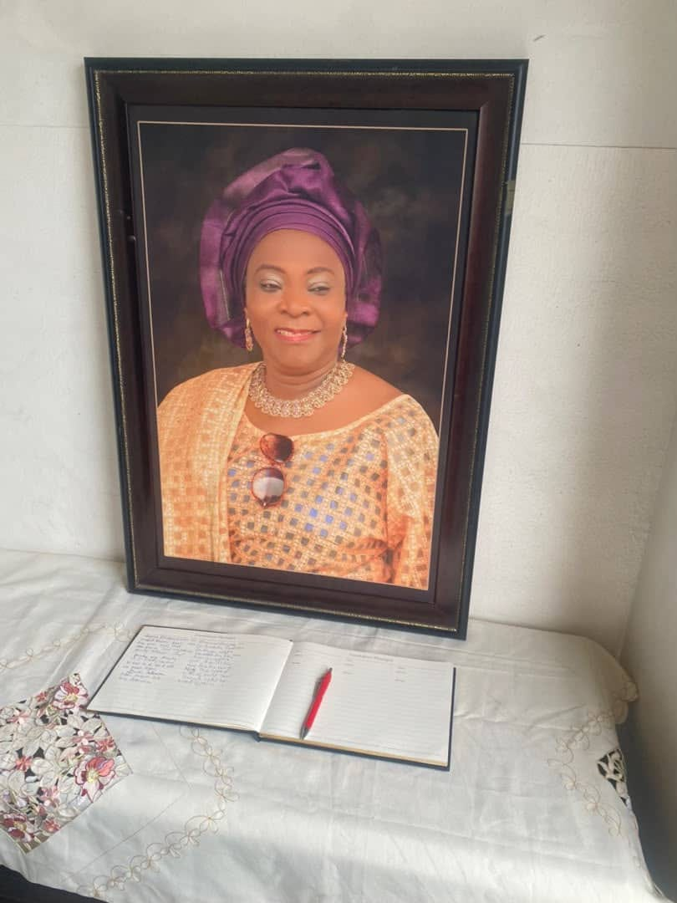
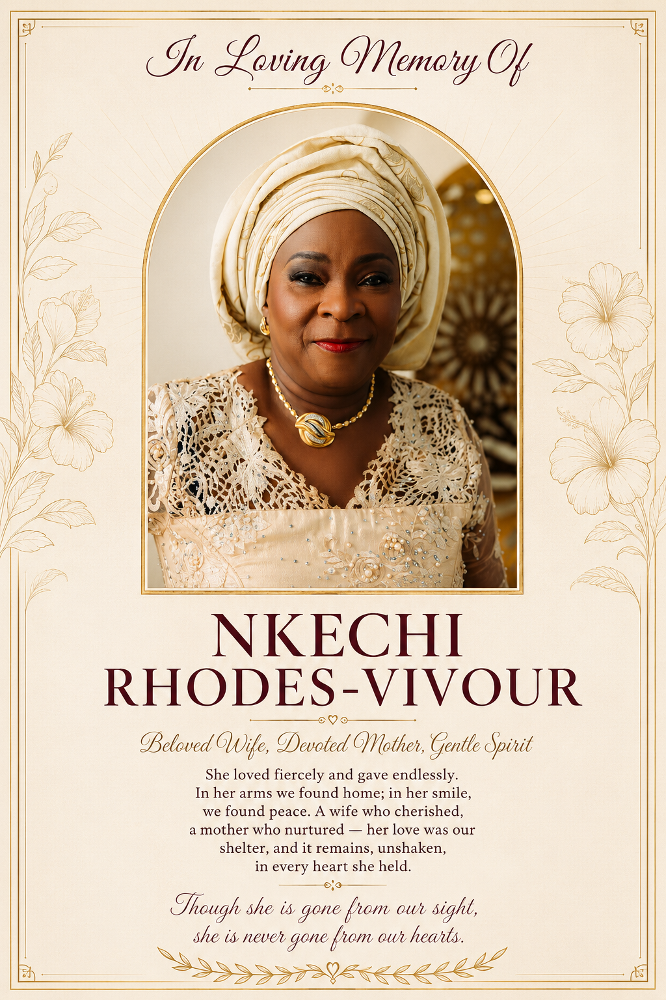
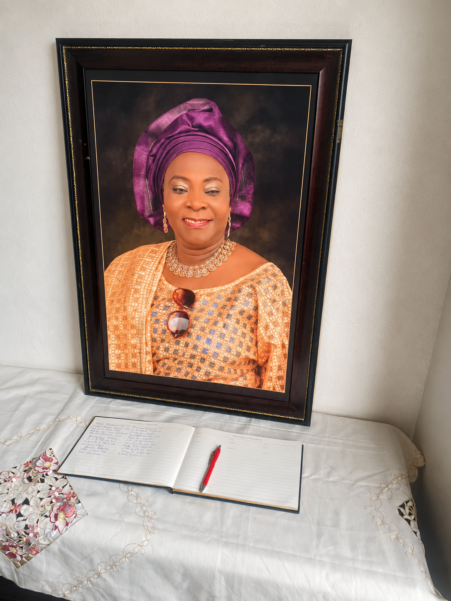

Nkechi Stella Rhodes-Vivour
1950 — 2026 • Age 76
“A devoted matriarch, a gentle spirit, and the epitome of love.”
128
Candles lit in her memory
1950 — 2026 • Age 76
“A devoted matriarch, a gentle spirit, and the epitome of love.”
Nkechi Stella Rhodes-Vivour was born into the respected Waboso family in Nigeria. She grew up in a family that deeply valued strong moral principles, respect, and service to others. Her upbringing helped shape the compassionate and caring personality for which she later became known among relatives, friends, and members of the wider community.
She spent most of her early years away from public attention and maintained a private lifestyle throughout her life. Very little information has been released about her childhood, siblings, or early experiences. Despite the limited public record, those close to her have described her as a woman of dignity, humility, and quiet strength. These qualities remained evident throughout her life as she devoted herself to her family and personal responsibilities.

Nkechi Stella Rhodes-Vivour was married to Olawale Rhodes-Vivour, a distinguished architect and former Commissioner for Housing in Lagos State. Their marriage was built on love, mutual respect, and a shared commitment to family values. Together, they raised their children in an environment that emphasized education, integrity, compassion, and service to society.
She was the devoted mother of Gbadebo Rhodes-Vivour, an architect, entrepreneur, and Nigerian politician who gained national recognition as the Labour Party candidate in the 2023 Lagos State governorship election. Throughout her son’s political journey, Nkechi Stella Rhodes-Vivour remained one of his strongest supporters, standing by him during campaigns and encouraging him to pursue public service with courage.
Beyond her immediate family, she was a cherished grandmother and a respected member of both the Rhodes-Vivour and Waboso families. Friends and relatives remembered her as a woman who welcomed everyone with kindness, offered wise counsel, and placed the well-being of her loved ones above all else.
A devout Christian, Nkechi Stella Rhodes-Vivour demonstrated values commonly associated with her faith, including kindness, humility, compassion, forgiveness, and service to others. Her date of birth was kept private, as she preferred to live away from the public spotlight, but she was widely recognized as the matriarch of the Rhodes-Vivour family and was admired for her wisdom and grace.
Her family announced her "call to glory" on July 13, 2026, via a statement signed by Olawale Rhodes-Vivour. She was remembered by her loved ones and political figures as a devoted matriarch, a gentle spirit, and the "epitome of love."
Her legacy lives on through her children, grandchildren, and the values she passed from one generation to the next. Her impact is visible in the achievements of her family, whose public service and careers in architecture and politics reflect the principles of integrity and perseverance she encouraged.
Scriptural Remembrance
“Her children arise up, and call her blessed; her husband also, and he praiseth her.”
PROVERBS 31:28
Leave your words of comfort, memory, and respect for the family.
Loading tributes from friends & family...
Moments from a beautiful life, shared by family and friends.

